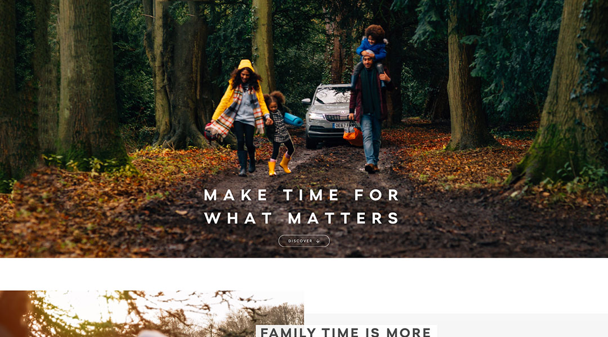

For each of ŠKODA’s models, we created stories that set the products in aspirational, but relatable scenarios. These are all derived from the stories of real consumers and set in familiar surroundings. For example, a family trip to the seaside – eating fish and chips and crabbing on the pier. The intent was not to paint idyllic, picture postcard settings, but rather depict the warts-and-all reality, then show how the car could make life that bit better. For example, a typically cold and blustery day by the sea in England, but the car is cosy and comforting inside.
{kind=link}
Starting with a few key products, we completely redesigned the model pages for ŠKODA products. In addition to depicting the product stories, this included rethinking how we laid out information and talked about products. Features were now articulated in terms of their emotional benefits and the navigation of these sections was re-thought to move users from emotional, through to functional information on the path-to-purchase.